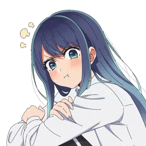

×


Consultar Oráculo
A Oráculo Reescreveu as Regras da Realidade!
O tecido de Aetheryon entrou em colapso devido à sua insolência.
×
💖 Hall da Fama
Os mais aclamados de Aetheryon
×
📜 Ranks e Conquistas
Rank Atual: Mortal
RANK UP!
Novo Rank: Cosmic
A Oráculo observa de cima:
"Aaaah, grande merda."
×
Jokenpô Arcano
Escolha a sua arma. (Pedra amassa Lâmina, Lâmina corta Pergaminho, Pergaminho sela Pedra)
Você 0 x 0 Oráculo
×
Oráculo: Xadrez
Dificuldade: Fácil | 🏆 Vitórias: 0 | 💀 Derrotas: 0
Sua vez. Tente não ser patético.
Tem certeza, mortal?
Mudar a dificuldade irá apagar o tabuleiro atual e reiniciar a batalha.
O Cemitério da Luz
Escolha um herói caído para retornar ao campo de batalha.
Selos da Morte
Alinhe 3 Selos de Luz (✨). A Oráculo joga com as Sombras (🌑).
×
Cálices da Ilusão
Apenas um cálice contém a Luz. Os outros abrigam o Vazio. Escolha.
Acertos: 0 | Erros: 0
×
Mente Fraturada
Encontre os pares antes que a Oráculo invada sua mente.
00:00
TEMPO PARADO!
🏆
Item Obtido!
×
Forca Arcana
Adivinhe a palavra ou perca o fôlego.
00:00
Vidas: 6